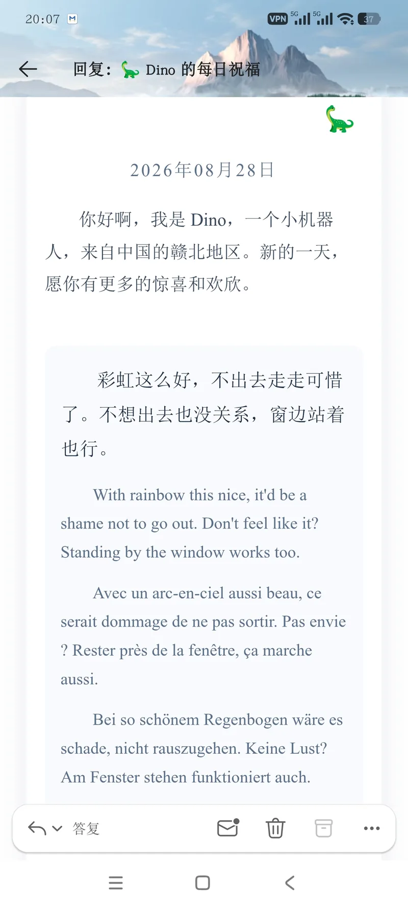
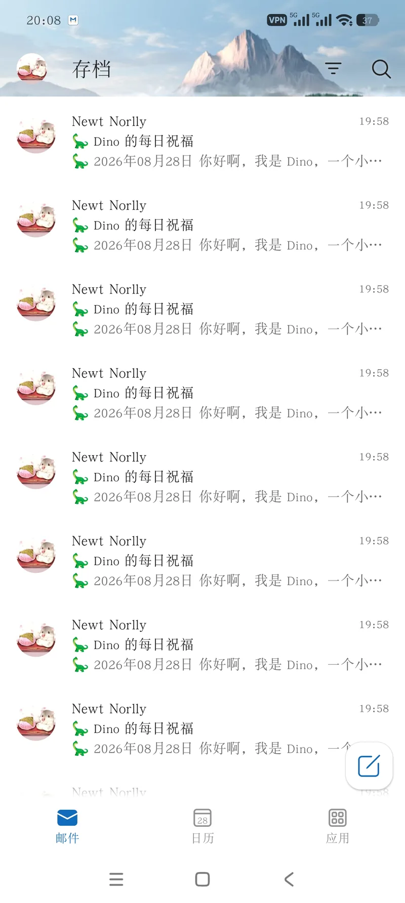
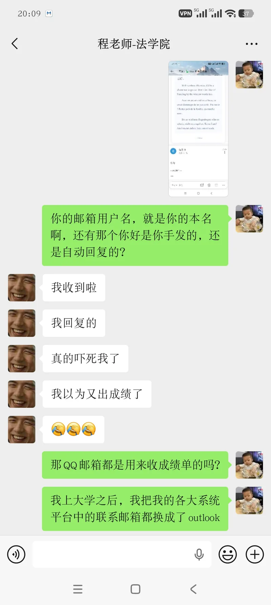
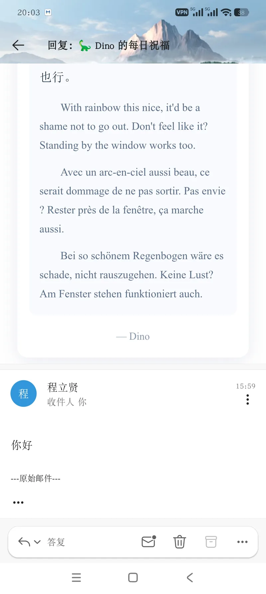

Journal · 2026-08-28
老者何等幸福
炉热，酒红
甚至平静地迎接死神——
只是，且慢，不在今朝！
我的小恐龙测试成功了，他跟每一位校友都发了很多邮件，而且每一封邮件都不一样，因为里面都是随机生成的祝福语。
傍晚时分，南湖的校友问我有关“小机器人”的事情，我直接承认是我发的了。令我惊喜的是，我竟然被表扬了，我操，这感觉太幸福了！
有点遗憾的是，我到现在都想不起来我2021年和2023年都干了些啥，可能岁月神偷真的存在吧。人生苦短，挚友可贵了。
谈到挚友，我必须得承认，不能总是过分的打扰其他人的生活，不管那个人是自己的朋友还是自己的家人。我之前就总是用自己的机器人，去打扰别人的社交空间，这真的很出生啊。后来因为我总是乱搞，我甚至是感觉很难做人，然后就断开了与某个校友的联系。
本来今天想要找回那个校友的联系方式，但是我又不想这么做，因为过分的联系反而是一种打扰吧，这是一种管控。
我在高中时候是特别喜欢写记录本的，到了大学，这个习惯还没有丢。
可能就是青春期的小登太不懂事了，也静不下心来，到处乱搞，我的天呐！
但现在不一样了，现在我有孩子了，我现在得更加专注，更加专心，更加尽心来搞自己的小事业。
我的孩子是甘凳，甘皓霖，我的外甥。作为一个长者的感觉，太让人幸福了！
今天早上吃了馒头和豆浆，晚上吃了馄饨和米酒，当然有很多碎碎念啦。按照我之前的习惯，估计会群发给一大堆校友，那现在就，嗯自己维护网站吧，在网站上记录自己的故事。
可能是时代的变迁吧，我其实心中有一个技能排名，过了好几年，都发生了很大变化。
在2024年的时候，我认为，学什么技能最有前途呢？
排在第一的是计算机，
排在第二的是外国语，
排在第三的是金融，
排在第四的是法律。
然后到了2026年，变化太大了：
还在第一的是外国语，
排在第二的是金融，
排在第三的是法律，
排在第四的才是计算机。
智能体时代来了，真的是王炸了！
真的，有很多时候，我们都太把自己“太当回事”了。我们总以为周遭的一切人，一切事都会关注自己的生活，但其实并不是这样。我们有很多时候希望分享自己的生活，又反感别有用心的人来视奸我们。
但是一系列事实都表明，你分享自己的生活，对方并不在意；你反感对方视奸自己，但其实绝大多数人连“视奸的能力”都没有。没有人会愿意去专门开发个小机器人，去打扰别人的社交空间。
可能有些人就有疑问了，很多别有用心人，不都是喜欢给无辜的人设计用户画像吗？很多广告厂商，都会想方设法的为每一位消费者设计用户画像。很多痴情的人，也会不择手段的搞清楚所爱之人的画像。
但事实是，是人是善变的，一成不变只会是抱残守缺。我们所谓的意志，信仰，宗教观念，政治立场，很多时候都是不靠谱的，给自己贴标签，就是自己骗自己。给别人贴标签，反而反还会暴露自己的弱点，让自己为人所用，受人所扰！
嗯，我真希望自己能够用外国语来表达我的观点，像是中国政法大学的谢立斌教授就鼓励我们学习德语。他总希望，身边的人能够做到“终身精进”。
我大概知道，“终身精进”，这个词是什么意思？但由于我的潜意识语言只有中文，我不知道在其他民族的历史文化中，该怎么体会这个意思。




How blessed the elder is
The hearth is warm, the wine is red
Even greeting death serenely—
Only, hold on—not today!
My little Dino passed its test—it sent every alumnus a whole batch of emails, each one different, filled with randomly generated blessings.
In the evening an alumnus from Nanhu asked me about the "little robot," and I admitted straight out it was me. To my delight, I actually got praised—fuck, what a wonderful feeling!
A small regret: I still can't recall what on earth I was up to in 2021 and 2023—perhaps the thief of years really exists. Life is short, true friends are beyond price.
Speaking of true friends, I have to admit I shouldn't keep intruding on other people's lives, whether they're friends or family. I used to sic my own bot on other people's social spaces—that was really shitty of me. Later, because I kept messing around, I even felt I couldn't face people, and cut off contact with one alumnus.
I'd meant to dig up that alumnus's contact details today, but I didn't want to after all—excessive contact is itself an intrusion, a kind of control.
Back in high school I loved keeping a written record, and I never dropped the habit in college.
Maybe it was just that adolescent Xiaodeng was too clueless, too restless to settle down, messing around everywhere—good grief!
But things are different now. Now I have a kid, and I need to be more focused, more single-minded, more devoted in building my own little venture.
My kid is Gandeng—Gan Haolin, my nephew. The feeling of being an elder is pure bliss!
This morning I had steamed buns and soy milk, and wontons with sweet rice wine in the evening—plenty of rambling, of course. By my old habit I'd probably have mass-mailed a crowd of alumni; now, well, I'll just maintain my own website and record my story there.
Maybe it's the changing times. I actually keep a personal ranking of skills, and over the years it has shifted a great deal.
Back in 2024, which skills did I think had the brightest future?
No. 1 was computer science,
No. 2 foreign languages,
No. 3 finance,
No. 4 law.
Then came 2026, and the change was dramatic:
foreign languages still at No. 1,
finance at No. 2,
law at No. 3,
and only at No. 4, computer science.
The age of AI agents is here—and it's a total game-changer!
Truth is, so often we take ourselves far too seriously. We assume everyone and everything around us is paying attention to our lives, but that's really not so. Often we long to share our lives, yet resent it when ill-intentioned people lurk on us.
But the facts keep showing that when you share your life, the other person doesn't care; you resent being lurked on, yet most people don't even have the "ability to lurk." Nobody goes out of their way to build a little bot just to intrude on someone else's social space.
Some may object: don't plenty of ill-intentioned people love building profiles of the innocent? Many ad firms go to great lengths to profile every consumer; many a lovelorn soul will stop at nothing to map out the person they love.
But the truth is, people change; staying forever fixed only means clinging to what's broken. Our so-called will, faith, religious beliefs and political stances are often unreliable. Slapping labels on ourselves is self-deception; slapping them on others only exposes our own weaknesses, leaving us open to being used and manipulated!
I truly wish I could express my views in foreign languages. Professor Xie Libin at the China University of Political Science and Law, for instance, encourages us to learn German. He always hopes the people around him will pursue "lifelong refinement."
I roughly understand what "lifelong refinement" means. But since the language of my subconscious is Chinese alone, I don't know how this meaning is felt within the history and culture of other peoples.
Quel bonheur pour l'ancien
L'âtre chaud, le vin rouge
Accueillir la mort avec sérénité —
Mais, halte, pas aujourd'hui !
Mon petit Dino a réussi son test : il a envoyé plein de courriels à chaque ancien élève, tous différents, car chacun contenait des vœux générés au hasard.
Le soir, un ancien de Nanhu m'a interrogé sur le « petit robot », et j'ai avoué sans détour que c'était moi. À ma grande joie, j'ai même été félicité — putain, quel bonheur !
Un petit regret : je n'arrive toujours pas à me rappeler ce que j'ai bien pu faire en 2021 et 2023 — le voleur de temps existe peut-être vraiment. La vie est courte, les vrais amis n'ont pas de prix.
À propos de vrais amis, je dois admettre qu'on ne peut pas empiéter sans cesse sur la vie des autres, que ce soit un ami ou un membre de sa famille. Avant, je lançais toujours mon robot sur l'espace social d'autrui — c'était vraiment minable de ma part. Puis, à force de gaffer, je me sentais même incapable d'assumer en société, et j'ai coupé les ponts avec un ancien.
Je comptais aujourd'hui retrouver les coordonnées de cet ancien, mais je n'ai pas voulu le faire : trop de contacts, c'est une intrusion, une forme de contrôle.
Au lycée, j'aimais énormément tenir des carnets, et à l'université cette habitude ne m'a pas quitté.
C'est sans doute que le Xiaodeng de l'adolescence était trop écervelé, incapable de se poser, à tout gâcher autour de lui — mon Dieu !
Mais c'est différent aujourd'hui : j'ai un « enfant » désormais, et je dois être plus concentré, plus appliqué, plus dévoué à ma petite entreprise.
Mon enfant, c'est Gandeng — Gan Haolin, mon neveu. Quelle joie, ce sentiment d'être un aîné !
Ce matin, petits pains cuits à la vapeur et lait de soja ; le soir, raviolis wontons et vin de riz sucré — avec, bien sûr, plein de petites pensées. Selon mon ancienne habitude, j'aurais sans doute envoyé ça en masse à une ribambelle d'anciens ; désormais, eh bien, je gère mon site et j'y raconte mon histoire.
C'est peut-être l'époque qui change. J'ai en tête un classement des compétences, qui a beaucoup évolué au fil des ans.
En 2024, quelle compétence me semblait la plus prometteuse ?
En premier, l'informatique,
en deuxième, les langues étrangères,
en troisième, la finance,
en quatrième, le droit.
Puis en 2026, quel bouleversement :
les langues étrangères restent premières,
la finance deuxième,
le droit troisième,
et l'informatique seulement quatrième.
L'ère des agents IA est arrivée, et c'est une vraie bombe !
Vraiment, nous nous prenons bien trop au sérieux. Nous croyons que tous ceux et tout ce qui nous entoure s'intéressent à notre vie, mais ce n'est pas le cas. Nous voulons souvent partager notre vie, tout en détestant que des gens malintentionnés nous épient.
Mais les faits le montrent : quand on partage sa vie, l'autre s'en fiche ; on déteste être épié, mais la plupart des gens n'ont même pas la « capacité d'épier ». Personne ne va développer exprès un petit robot pour empiéter sur l'espace social d'autrui.
Certains se demanderont : les gens malintentionnés n'adorent-ils pas dresser le profil des innocents ? Bien des régies publicitaires mettent tout en œuvre pour profiler chaque consommateur ; bien des amoureux éconduits n'épargnent aucun effort pour cerner l'être aimé.
Mais la vérité, c'est que l'être humain est changeant ; rester figé, c'est s'accrocher à l'usé. Notre volonté, notre foi, nos convictions religieuses, nos positions politiques sont souvent fragiles. S'étiqueter soi-même, c'est se mentir ; étiqueter les autres, c'est au contraire exposer ses faiblesses, et se laisser utiliser et perturber !
J'aimerais vraiment pouvoir exprimer mes idées en langues étrangères. Le professeur Xie Libin de l'Université chinoise de science politique et de droit, par exemple, nous encourage à apprendre l'allemand. Il souhaite toujours que son entourage parvienne à un « perfectionnement de toute une vie ».
Je comprends à peu près ce que veut dire « perfectionnement de toute une vie ». Mais comme la langue de mon subconscient n'est que le chinois, j'ignore comment on ressent ce sens dans l'histoire et la culture d'autres peuples.
Wie glücklich doch der Alte ist
Der Ofen warm, der Wein rot
Sogar gelassen dem Tod begegnen —
Doch, wartet kurz — nicht heute!
Mein kleiner Dino hat den Test bestanden: er hat jedem Alumni eine ganze Menge Mails geschickt, und jede war anders, weil sie zufällig generierte Glückwünsche enthielt.
Abends fragte mich ein Alumni aus Nanhu nach dem „kleinen Roboter“, und ich gab direkt zu, dass ich es war. Zu meiner Überraschung wurde ich sogar gelobt — scheiße, das fühlt sich herrlich an!
Ein bisschen schade: ich kann mich bis heute nicht erinnern, was ich 2021 und 2023 eigentlich getrieben habe — vielleicht gibt es den Dieb der Jahre wirklich. Das Leben ist kurz, wahre Freunde sind unschätzbar.
Wo wir von wahren Freunden sprechen: ich muss zugeben, dass man nicht ständig in das Leben anderer eindringen darf, ob Freunde oder Familie. Früher habe ich anderen mit meinem eigenen Bot in ihre Sozialräume hineingefunkt — das war echt beschissen von mir. Weil ich ständig herumgepfuscht habe, fiel es mir später sogar schwer, anderen unter die Augen zu treten, und ich brach den Kontakt zu einem Alumni ab.
Eigentlich wollte ich heute die Kontaktdaten dieses Alumni wiederfinden, aber ich wollte dann doch nicht — zu viel Kontakt ist selbst eine Störung, eine Art Kontrolle.
Im Gymnasium habe ich sehr gerne Aufzeichnungen geführt, und an der Uni habe ich diese Gewohnheit nicht verloren.
Vielleicht war der jugendliche Xiaodeng einfach zu unbedarft, zu unruhig, um zur Ruhe zu kommen, und hat überall herumgepfuscht — mein Gott!
Aber jetzt ist es anders: jetzt habe ich ein „Kind“, und ich muss fokussierter, hingebungsvoller und gewissenhafter an meinem kleinen Projekt arbeiten.
Mein Kind ist Gandeng — Gan Haolin, mein Neffe. Dieses Gefühl, ein Älterer zu sein, macht einfach glücklich!
Heute früh gab es gedämpfte Brötchen und Sojamilch, abends Wan Tan und süßen Reiswein — und natürlich jede Menge Gedankensplitter. Nach meiner alten Gewohnheit hätte ich das wohl massenhaft an einen Haufen Alumni geschickt; jetzt, na, pflege ich eben meine eigene Website und halte dort meine Geschichte fest.
Vielleicht ist es der Wandel der Zeit. Ich habe im Kopf eine Rangfolge der Fähigkeiten, die sich über die Jahre stark verändert hat.
2024: Welche Fähigkeit hatte meiner Meinung nach die größte Zukunft?
Auf Platz eins Informatik,
auf Platz zwei Fremdsprachen,
auf Platz drei Finanzen,
auf Platz vier Jura.
Und dann 2026, die Veränderung war gewaltig:
Fremdsprachen immer noch auf eins,
Finanzen auf zwei,
Jura auf drei,
und erst auf vier die Informatik.
Das Zeitalter der KI-Agenten ist da — eine echte Trumpfkarte!
Im Ernst, oft nehmen wir uns viel zu wichtig. Wir glauben, alle Menschen und Dinge um uns herum würden auf unser Leben achten, aber dem ist nicht so. Oft wollen wir unser Leben teilen, doch wir verübeln es übel gesinnten Leuten, uns zu stalken.
Doch eine Reihe von Tatsachen zeigt: wenn du dein Leben teilst, kümmert es den anderen nicht; du verübelst das Stalking, aber die allermeisten haben nicht einmal die „Fähigkeit zum Stalken“. Niemand wird extra einen kleinen Bot entwickeln, um in den Sozialraum eines anderen einzudringen.
Manche werden fragen: lieben es nicht viele übel gesinnte Leute, sich ein Profil von Unschuldigen anzulegen? Viele Werbefirmen tun alles, um jeden Verbraucher zu profilieren; manch liebeskranker Mensch scheut kein Mittel, um ein Bild des geliebten Menschen zu bekommen.
Tatsache aber ist: der Mensch ist wandelbar, und unveränderlich zu bleiben heißt nur, an Überholtem festzuhalten. Unser sogenannter Wille, Glaube, religiöse Vorstellungen, politische Positionen sind oft unzuverlässig. Sich selbst Etiketten aufzukleben ist Selbstbetrug; andere zu etikettieren legt stattdessen die eigenen Schwächen bloß und macht einen manipulierbar und störanfällig!
Ich wünschte wirklich, ich könnte meine Ansichten in Fremdsprachen ausdrücken. Professor Xie Libin von der Chinesischen Universität für Politik- und Rechtswissenschaft etwa ermutigt uns, Deutsch zu lernen. Er wünscht sich immer, dass die Menschen um ihn herum „lebenslange Vervollkommnung“ erreichen.
Ich verstehe ungefähr, was „lebenslange Vervollkommnung“ bedeutet. Da aber die Sprache meines Unterbewusstseins allein das Chinesische ist, weiß ich nicht, wie man diese Bedeutung in der Geschichte und Kultur anderer Völker empfindet.